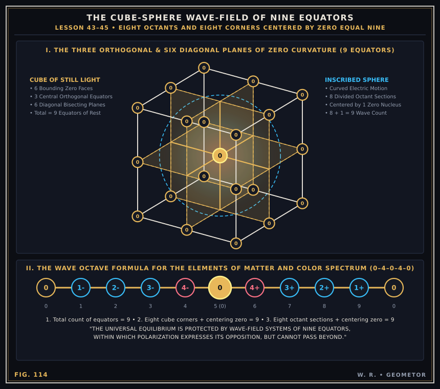

Chapter III: The Cube-Sphere Wave-Field & The Nine Equators of Zero Curvature¶
The Crystal Geometry of Space and the 0–4–0–4–0 Wave Octave (Lessons 41–45)
The crown jewel of Russell’s geometric cosmogony is the Cube-Sphere Wave-Field (Figs. 105–124). Space is not an unstructured void; it is a crystalline lattice of bounding cubes of Still Magnetic Light whose flat faces and internal bisecting planes are planes of zero curvature (`0`).
The Nine Equators and the 9 Count of Creation¶
Within every cubic wave-field, electric motion curves inward to form an inscribed sphere divided into eight octants centered by a single zero nucleus:
Three Orthogonal Planes of Zero Curvature: Bisecting the cube along the $X, Y, Z$ axes ($x=0, y=0, z=0$), dividing the sphere into 8 octants.
Six Diagonal Planes of Zero Curvature: Bisecting all 12 edges of the cube at $45^\circ$ ($x \pm y = 0, y \pm z = 0, z \pm x = 0$).
Total Equators = 9: Every polarized action-reaction cycle counts to nine—eight octants (or eight cube corners) centered by zero (8 + 1 = 9), anchored by the 27 Zero-Nodes ($\{-1, 0, 1\}^3$) and expressed along the wave axis as the octave formula:
$$0 - 1^- - 2^- - 3^- - 4^- - \mathbf{0} - 4^+ - 3^+ - 2^+ - 1^+ - 0$$


Plate IV (Fig. 114): Isometric projection of the Cube-Sphere Wave-Field showing the 3 orthogonal planes of zero curvature, the 27 zero-nodes (0) of the $3 \times 3 \times 3$ lattice, the inscribed sphere of curved motion, and the 9-count wave octave formula.¶
Interactive 3D Cube-Sphere Lattice & All Nine Equators¶
Orbit the 3D Cube-Sphere Lattice below, toggle the 3 Orthogonal Planes and all 6 Diagonal Bisecting Planes (3 + 6 = 9 Equators), inspect the 27 Zero-Nodes, and modulate sphere inscription:
Parametric 3D Geometry Exports:
Wavefront OBJ (cube_sphere.obj)
·
Scene JSON (cube_sphere.json)